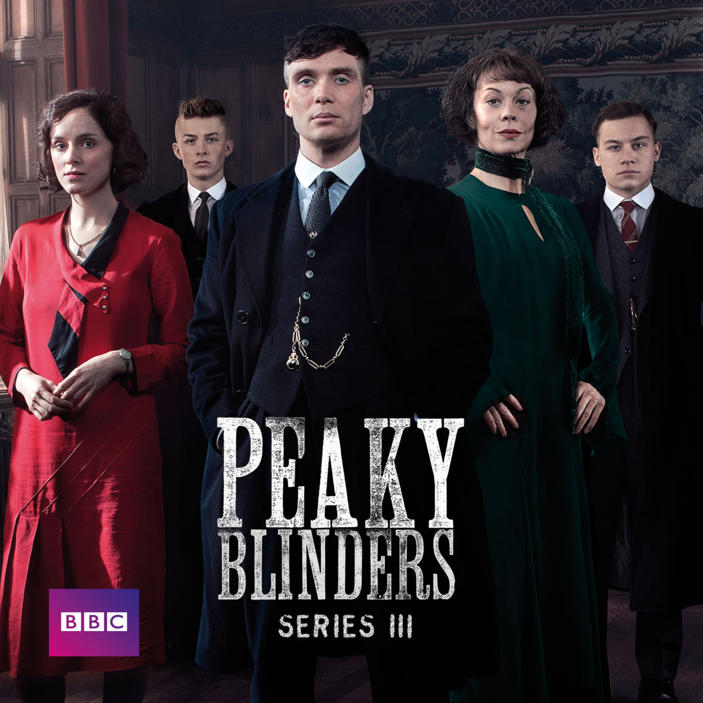
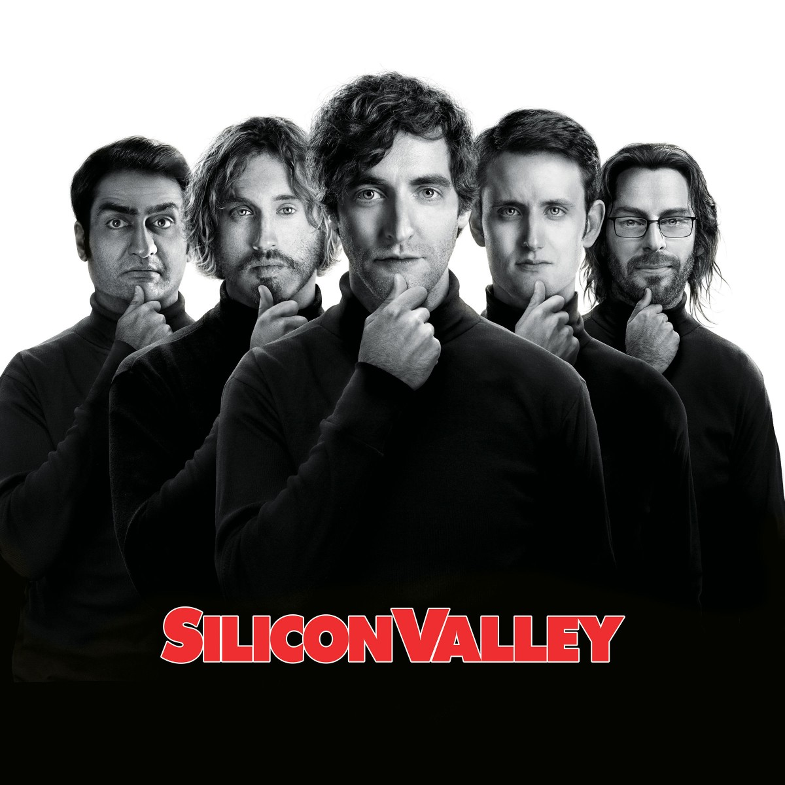
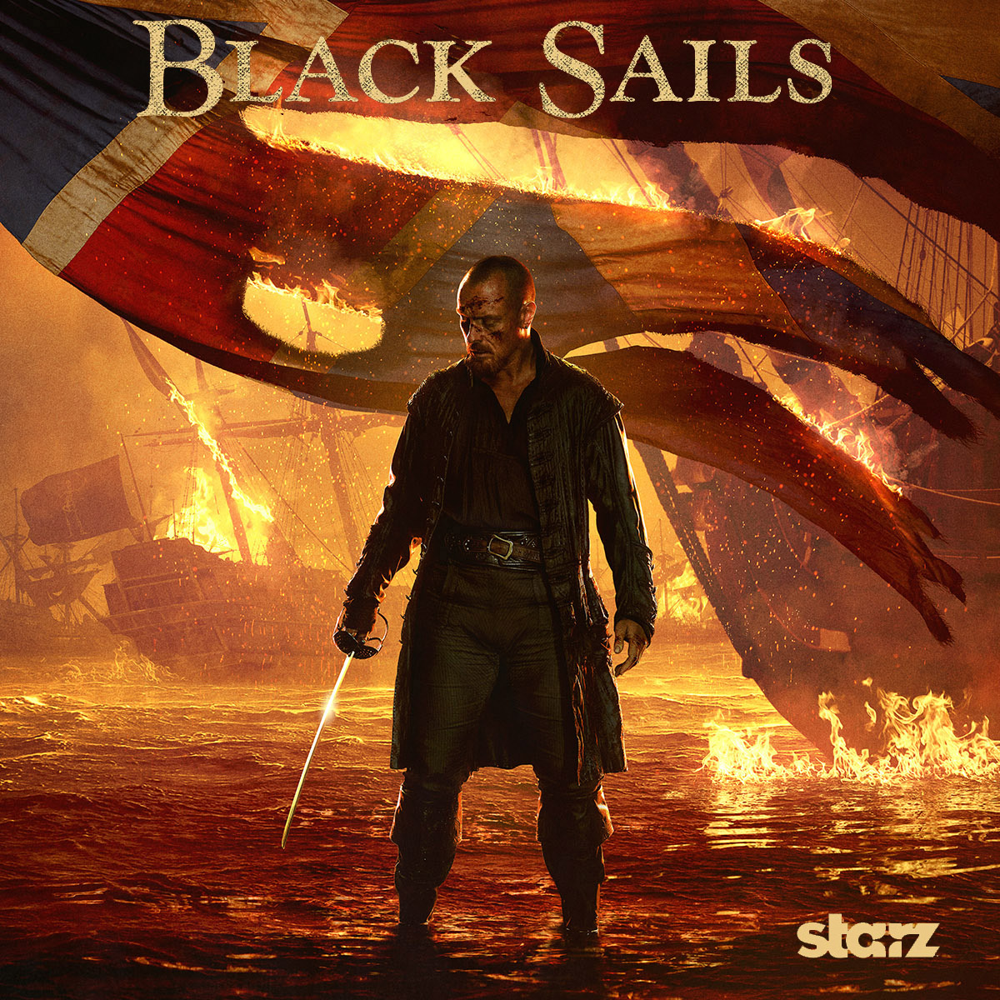

"Get healthier for good : buy happy, buy local"
Empowering local food system in Lyon
|  |
Peaky BlindersPeaky Blinders is a television crime drama based upon the exploits of the Peaky Blinders gang, operating in Birmingham, England during the aftermath of World ... |
|  |
Silicon ValleySilicon Valley is a nickname for the southern portion of the San Francisco Bay Area, which is located in the part of the U.S. state of California known as Northern ... |
|  |
Black SailsBlack Sails is an American dramatic adventure television series set on New Providence Island and a prequel to Robert Louis Stevenson's novel Treasure Island. |
Le plus large choix de produits ultra-frais, garantis bio et locaux, livrés gratuitement à domicile en 24 heures à Lyon
Les produits arrivent chez Deligreens dans la journée après la récolte, contre 5 jours (au moins) dans un supermarché